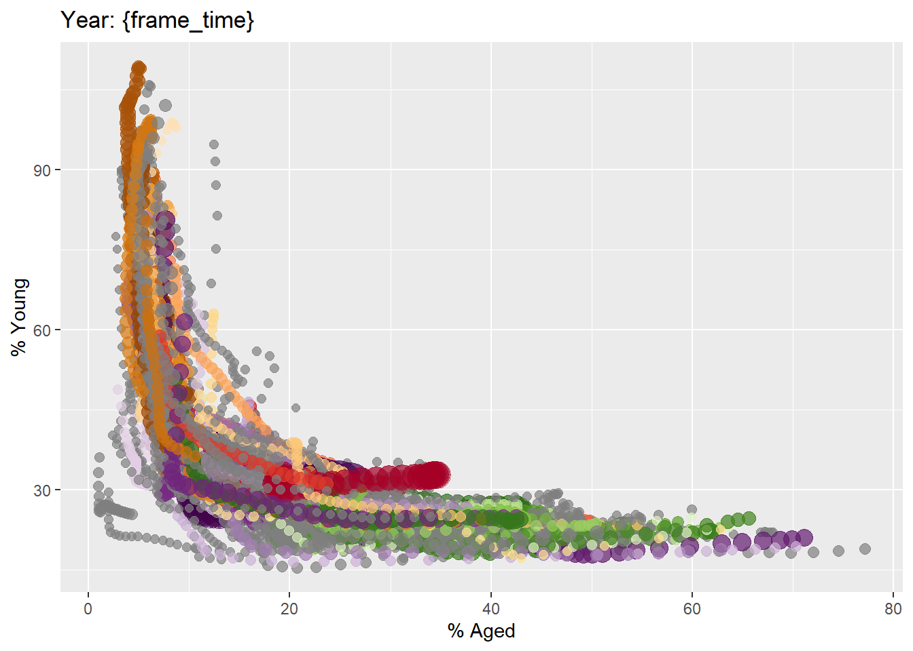

pacman::p_load(readxl, gifski, gapminder,
plotly, gganimate, tidyverse)Hands-on Ex3b
Programming Animated Statistical Graphics with R
Overview
When telling a visually-driven data story, animated graphics tends to attract the interest of the audience and make deeper impression than static graphics. In this hands-on exercise, you will learn how to create animated data visualisation by using gganimate and plotly r packages. At the same time, you will also learn how to (i) reshape data by using tidyr package, and (ii) process, wrangle and transform data by using dplyr package.
Basic concepts of animation
When creating animations, the plot does not actually move. Instead, many individual plots are built and then stitched together as movie frames, just like an old-school flip book or cartoon. Each frame is a different plot when conveying motion, which is built using some relevant subset of the aggregate data. The subset drives the flow of the animation when stitched back together.
Terminology
Before we dive into the steps for creating an animated statistical graph, it’s important to understand some of the key concepts and terminology related to this type of visualization.
Frame: In an animated line graph, each frame represents a different point in time or a different category. When the frame changes, the data points on the graph are updated to reflect the new data.
Animation Attributes: The animation attributes are the settings that control how the animation behaves. For example, you can specify the duration of each frame, the easing function used to transition between frames, and whether to start the animation from the current frame or from the beginning.
Tip Before you start making animated graphs, you should first ask yourself: Does it makes sense to go through the effort? If you are conducting an exploratory data analysis, a animated graphic may not be worth the time investment. However, if you are giving a presentation, a few well-placed animated graphics can help an audience connect with your topic remarkably better than static counterparts.
Getting Started
Loading the R packages
First, write a code chunk to check, install and load the following R packages:
- plotly, R library for plotting interactive statistical graphs.
- gganimate, an ggplot extension for creating animated statistical graphs.
- gifski converts video frames to GIF animations using pngquant’s fancy features for efficient cross-frame palettes and temporal dithering. It produces animated GIFs that use thousands of colors per frame.
- gapminder: An excerpt of the data available at Gapminder.org. We just want to use its country_colors scheme.
- tidyverse, a family of modern R packages specially designed to support data science, analysis and communication task including creating static statistical graphs.
Importing the data
In this hands-on exercise, the Data worksheet from GlobalPopulation Excel workbook will be used.
Write a code chunk to import Data worksheet from GlobalPopulation Excel workbook by using appropriate R package from tidyverse family.
col <- c("Country", "Continent")
globalPop <- read_xls("data/GlobalPopulation.xls",
sheet="Data") %>%
mutate_each_(funs(factor(.)), col) %>%
mutate(Year = as.integer(Year))Things to learn from the code chunk above read_xls() of readxl package is used to import the Excel worksheet. mutate_each_() of dplyr package is used to convert all character data type into factor. mutate of dplyr package is used to convert data values of Year field into integer. Unfortunately, mutate_each_() was deprecated in dplyr 0.7.0. and funs() was deprecated in dplyr 0.8.0. In view of this, we will re-write the code by using mutate_at() as shown in the code chunk below.
col <- c("Country", "Continent")
globalPop <- read_xls("data/GlobalPopulation.xls",
sheet="Data") %>%
mutate_at(col, as.factor) %>%
mutate(Year = as.integer(Year))Instead of using mutate_at(), across() can be used to derive the same outputs.
col <- c("Country", "Continent")
globalPop <- read_xls("data/GlobalPopulation.xls",
sheet="Data") %>%
mutate(across(col, as.factor)) %>%
mutate(Year = as.integer(Year))Animated Data Visualisation: gganimate methods
gganimate extends the grammar of graphics as implemented by ggplot2 to include the description of animation. It does this by providing a range of new grammar classes that can be added to the plot object in order to customise how it should change with time.
- transition_*() defines how the data should be spread out and how it relates to itself across time.
- view_*() defines how the positional scales should change along the animation.
- shadow_*() defines how data from other points in time should be presented in the given point in time.
- enter_()/exit_() defines how new data should appear and how old data should disappear during the course of the animation.
- ease_aes() defines how different aesthetics should be eased during transitions.
Building a static population bubble plot
In the code chunk below, the basic ggplot2 functions are used to create a static bubble plot.
ggplot(globalPop, aes(x = Old, y = Young,
size = Population,
colour = Country)) +
geom_point(alpha = 0.7,
show.legend = FALSE) +
scale_colour_manual(values = country_colors) +
scale_size(range = c(2, 12)) +
labs(title = 'Year: {frame_time}',
x = '% Aged',
y = '% Young') 
Building the animated bubble plot
In the code chunk below,
transition_time() of gganimate is used to create transition through distinct states in time (i.e. Year). ease_aes() is used to control easing of aesthetics. The default is linear. Other methods are: quadratic, cubic, quartic, quintic, sine, circular, exponential, elastic, back, and bounce.
ggplot(globalPop, aes(x = Old, y = Young,
size = Population,
colour = Country)) +
geom_point(alpha = 0.7,
show.legend = FALSE) +
scale_colour_manual(values = country_colors) +
scale_size(range = c(2, 12)) +
labs(title = 'Year: {frame_time}',
x = '% Aged',
y = '% Young') +
transition_time(Year) +
ease_aes('linear')